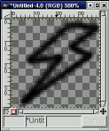

versión 0.9.14
Un sencillo programa de dibujo para niños
Copyright 2004 por Bill Kendrick
New Breed Software
bill@newbreedsoftware.com
http://www.newbreedsoftware.com/tuxpaint/
14 de Junio de 2002 - 24 de Setiembre de 2004
Copyright 2004 por Bill Kendrick
New Breed Software
bill@newbreedsoftware.com
http://www.newbreedsoftware.com/tuxpaint/
14 de Junio de 2002 - 24 de Setiembre de 2004
¿Qué es 'Tux Paint'?
"Tux Paint" es un programa de dibujo libre diseñado para niños chicos (3 o más años). Presenta una interfaz simple y fácil de usar, divertidos efectos de sonido y una estimulante mascota de dibujo animado que ayuda a guiar al niño mientras utiliza el programa. Provee una tela vacía y una gran variedad de herramientas de dibujo que ayudan al niño a ser creativo.
Licencia:
Tux Paint es un proyecto de Código Abierto; un programa libre lanzado bajo las disposiciones de la Licencia Pública General de GNU (General Public License o GPL). Es libre y el 'código fuente' del programa está disponible. (Esto le permite a otros agregar funciones, corregir errores y utilizar partes del programa en sus propios programas bajo licencia GPL.)
Ver COPIADO.txt con el texto completo de la licencia GPL.
Objetivos:
- Sencillo y Divertido
- Tux Paint está concebido como un programa de dibujo sencillo para niños chicos. No está pensado como una herramienta de dibujo de uso general. Sí está concebido para ser divertido y fácil de usar. Efectos de sonido y un personaje de tipo dibujo animado le permiten al usuario saber qué está sucediendo y mentenerse entretenido. También hay punteros de ratón tipo dibujo animado de formas extra grandes.
- Extensibilidad
- Tux Paint es extensible. Es posible agregar y quitar pinceles y "sellos" con imágenes. Por ejemplo, una maestra puede agregar una colección de figuras de animales y pedirle a sus alumnos que dibujen un ecosistema. Cada figura puede tener un sonido asociado y textos descriptivos, los cuales se despliegan cuando el niño selecciona la figura.
- Portabilidad
- Tux Paint es portable a varias plataformas de computación: Windows, Macintosh, Linux, etc. La interfaz luce idéntica en todas ellas. Tux Paint se ejecuta correctamente en sistemas viejos (como un Pentium de 133MHz) y puede ser compilado para correr mejor en sistemas lentos.
- Simplicidad
- No hay necesidad de acceder directamente a otras áreas de la computadora. La imagen en curso es conservada cuando se sale del programa y reaparece cuando éste se vuelve a usar. Guardar las imágenes no requiere conocimiento de cómo crear nombres de archivo o utilizar el teclado. La apertura de las imágenes se realiza mediante su selección de entre una colección de miniaturas de las mismas. El acceso a otros archivos de la computadora está restringido.
Cargando Tux Paint
Usuarios de Linux/Unix
Tux Paint debe haber colocado un ícono en en el menú de KDE y/o GNOME, bajo 'Graficos'.
Alternativamente, es posible ejecutar el siguiente comando desde una consola del sistema (p.ej: "$"):
$ tuxpaintSi ocurriera algún error, se mostrará en la terminal (en "stderr").
Usuarios de Windows
Tux PaintSi Tux Paint fue instalado utilizando el 'Instalador de Tux Paint', el mismo debió efectuar una consulta sobre si se deseaba colocar un acceso directo en el menú 'Incio' y/o en el escritorio. Si se asintió, será posible ejecutar Tux Paint desde la sección Tux Paint del menú 'Inicio' (bajo "Todos los Programas" en Windows XP), o haciendo doble clic en el ícono de Tux Paint en el escritorio.
Si se instaló el Tux Paint desde un archivo comprimido ZIP o si se contestó negativamente a la consulta antes mencionada durante el proceso de instalación, será necesario hacer doble clic sobre el propio ejecutable de Tux Paint "
tuxpaint.exe", en la carpeta 'Tux Paint' en la computadora.Por defecto el 'Instalador de Tux Paint' colocará la carpeta del Tux Paint en "
C:\Archivos de Programa\", aunque es posible que esta hubiera sido modificada durante el proceso de instalación.Si se utilizó el archivo ZIP para instalarlo, la carpeta del 'Tux Paint' se encontrará donde esta hubiera sido colocada al extraer el contenido del ZIP.
Usuarios de Mac OS X
Simplemente hacer doble clic sobre el ícono de "Tux Paint".
Pantalla de Título
Al cargarse, Tux Paint muestra una pantalla inicial con los créditos.
Una vez que la carga se ha completado, se presiona una tecla o un clic con el ratón para continuar (o, luego de unos 30 segundos, la pantalla de título desaparecerá automáticamente.)
Pantalla Principal
La pantalla principal está dividida en las siguientes secciones:
- Izquierda: Barra de Herramientas
La barra de herramientas contiene los controles de dibujo y edición.
- Central: Tela de Dibujo
La parte más grande de la pantalla, en el centro, es la tela de dibujo. ¡Es en ella, obviamente, donde se dibuja!
- Derecha: Selector
Dependiendo de la herramienta activa, el selector muestra distintas cosas. p.ej: mientras la herramienta Pintar está activa, muestra los varios pinceles disponibles. Al seleccionar la herramienta Sellos, éste muestra las diferentes figuras que pueden ser usadas.
- Inferior: Colores
Una paleta con los colores disponibles se muestra cerca de la parte inferior de la pantalla.
- Extremo Inferior: Área de Ayuda
En la parte más baja de la pantalla, Tux, el Pingüino de Linux, da sugerencias y otras informaciones al dibujar.
Herramientas Disponibles
Herramientas de Dibujo
- Pintar

La herramienta Pintar permite dibujar a mano alzada, usando distintos pinceles (elegidos en el Selector de la derecha) y colores (elegidos en la paleta de Colores en la parte inferior).
Si se mantiene presionado el botón del ratón y se arrastra el mismo, éste dibujará a medida que se mueve.
A medida que se dibuja, se escucha un sonido. Cuanto más grande sea el pincel, más grave será su tono.
- Sellos (de Goma)

La herramienta Sellos se asemeja a sellos de goma o calcomanías. Permite estampar imágenes pre-dibujadas o fotografías (como una foto de un caballo, un árbol o la Luna) sobre la tela.
A medida que se mueve el ratón, un contorno lo acompaña, indicando donde será ubicado el sello.
Cada sello puede tener su propio efecto de sonido. Algunos sellos pueden ser coloreados o teñidos.
Los sellos pueden ser achicados o agrandados y muchos de ellos pueden ser invertidos vertical u horizontalmente, utilizando controles en la parte inferior derecha de la pantalla.
(NOTA: Si la opción "
nostampcontrols" fue seleccionada, Tux Paint no mostrará los controles para Espejar, Invertir, Achicar y Agrandar los sellos. Ver la documentación de las"Opciones".)
- Líneas

Esta herramienta permite dibujar líneas rectas usando los pinceles y colores que normalmente se utilizan con la herramienta Pintar.
Hacer clic y mantener presionado para escoger el punto inicial de la línea. A medida que se mueve el ratón, una delgada 'banda elástica' indicará donde será dibujada la línea.
Soltar el botón para completar la línea. Se escuchará un sonido tipo "¡sproing!".
- Figuras

Esta herramienta permite dibujar figuras simples, tanto rellenas como sólo sus contornos.
Seleccionar una figura del selector de la derecha (círculo, cuadrado, óvalo, etc.).
En la tela, hacer clic y arrastrar para estirar la figura desde donde se inició la operación. Algunas figuras pueden cambiar su proporción (p.ej: el rectángulo y el óvalo), otras no (p.ej: el cuadrado y el círculo).
Soltar el botón para fijar el tamaño.
- Modo Normal
Ahora es posible mover el ratón sobre la tela para rotar la figura.
Hacer clic otra vez; la figura se dibujará usando el color actual.
- Modo Simple
- Si el modo simple está activado (opción "
--simpleshapes"), la figura se dibujará sobre la tela al soltar el botón del ratón. (Sin el paso para la rotación.)
- Texto

Escoger un tipo de letra (de las 'Letras' disponibles a la derecha) y un color (desde la paleta en la parte inferior). Hacer clic en la pantalla y aparecerá allí un cursor. Ingresar el texto, éste se mostrará en pantalla.
Presionar [Enter] o [Intro] para que el texto sea dibujado sobre la imagen; el cursor se moverá una línea hacia abajo.
Hacer clic en otro lugar de la imagen para que la línea de texto se mueva allí, donde se podrá continuar la edición.
- Mágicas (Efectos Especiales)

Las herramientas 'Mágicas' son un conjunto de herramientas especiales. Seleccionar uno de los efectos "mágicos" desde el selector de la derecha y luego hacer clic, arrastrando el ratón por la imagen para aplicar el efecto.
- Arcoiris
- Esta herramienta es similar a Pintar, pero a medida que se mueve el ratón, éste pasa por todos los colores del arcoiris.
- Chispas
- Esta herramienta dibuja brillantes chispas amarillas en la imagen.
- Espejar
- Al hacer clic con el ratón sobre la imagen usando el efecto mágico "Espejar", la imagen entera será invertida horizontalmente, transformándola en una imagen a espejo.
- Invertir
- Similar a "Espejar". Hacer clic y la imagen entera será invertida verticalmente.
- Desenfocar
- Esta herramienta deja la imagen borrosa por donde se pase el ratón.
- Bloques
- Esta herramienta deja la imagen cuadriculada ("pixelizada") donde se haya pasado el ratón.
- Negativo
- Esta herramienta invierte los colores en donde se pase el ratón. (p.ej: el blanco se vuelve negro y viceversa.)
- Desvanecer
- Esta herramienta desvanece los colores en donde se arrastre el ratón. (Hacerlo sobre el mismo punto varias veces lo tornará finalmente blanco.)
- Tiza
- Esta herramienta hace que partes de la imagen (donde se mueva el ratón) luzcan como dibujadas con tiza.
- Gotear
- Esta herramienta hace que la pintura "gotee" donde se haya pasado el ratón.
- Grueso
- Esta herramienta hace que los colores más oscuros de la imagen se vuelvan más gruesos por donde se pase el ratón.
- Fino
- Similar a "Grueso", excepto que los colores más oscuros se vuelven más finos (los colores más claros se vuelven más gruesos).
- Rellenar
- Esta herramienta inunda la imagen con un color. Permite rellenar rapidamente partes de la imagen, como si se tratara de un libro para colorear.
- Goma de Borrar

Esta herramienta es similar a Pintar. Donde se haga un clic (o clic y arrastrar), la imagen será borrada a blanco o a la imagen de fondo, si se comenzó un dibujo a partir de una 'Plantilla'.
La goma de borrar puede tener varios tamaños.
A medida que el ratón es movido, un contorno cuadrado sigue al puntero, indicando la parte de la imagen que será borrada.
A medida que se usa la goma de borrar, se escucha un sonido "chillonamente limpio".
Otros Controles
- Deshacer

Hacer clic en esta herramienta deshará la última acción de dibujo. ¡Hasta es posible deshacer más de una vez!
Nota: También es posible presionar [Control]-[Z] en el teclado para deshacer.
- Rehacer

Hacer clic en esta herramienta rehará la acción de dibujo que se acabó de deshacer con el botón 'Deshacer'.
Mientras no se vuelva a dibujar nada, ¡es posible rehacer tantos pasos como se hayan "deshecho"!
Nota: También es posible presionar [Control]-[R] en el teclado para rehacer.
- Nuevo

Hacer clic en el botón "Nuevo" comenzará un nuevo dibujo. Antes de hacerlo se pedirá confirmar la decisión.
Nota: También es posible presionar [Control]-[N] en el teclado para comenzar un nuevo dibujo.
- Abrir

Esto muestra una lista de todas las imágenes que han sido guardadas. Si hubiera más de las que entran en la pantalla, usar las flechas "Arriba" y "Abajo" en las partes superior e inferior de la lista para desplazarse por la lista de imágenes.
Hacer clic en una imagen para seleccionarla, luego...
Hacer clic en el botón verde "Abrir" en la parte inferior izquierda de la lista para abrir la imagen seleccionada.
(Alternativamente, es posible hacer doble clic en la miniatura de una imagen para abrirla.)
Hacer clic en el botón marrón "Borrar" (la lata de basura) en la parte inferior derecha de la lista para borrar la imagen seleccionada. (Se pedirá una confirmación.)
O hacer clic en el botón rojo "Atrás" (flecha) en la parte inferior derecha de la lista para cancelar y regresar a la imagen que se estaba dibujando previamente.
- 'Plantillas'
Además de las imágenes creadas por el usuario, Tux Paint puede proveer 'Plantillas'. Abrirlas es igual que crear una imagen normal, excepto que la imagen no aparece en blanco. Las 'Plantillas' pueden ser, bien como la página de un libro para colorear (un contorno en blanco y negro de una imagen, que se puede colorear), o como una fotografía 3D (con un plano de fondo y uno de frente, para dibujar entre medio de ambos).
Las miniaturas de las 'Plantillas' aparecen con fondo verde en el diálogo 'Abrir'. (Las imágenes normales tienen fondo azul.) Al abrir una 'Plantilla', dibujar sobre ella y luego hacer clic en 'Guardar', una nueva imagen es creada (no se sobreescribe la 'Plantilla' original, de forma que se pueda volver a utilizar).
Si se elige abrir un imagen y la imagen actual no había sido guardada, se consultará si se desea gurdarla o no. (Ver "Guardar", más abajo.)
Nota: También es posible presionar [Control]-[O] en el teclado para obtener el diálogo 'Abrir'.
- Guardar

Guarda la imagen actual.
Si no había sido guardada anteriormente, creará una nueva entrada en la lista de imágenes guardadas. (Creará un nuevo archivo.)
Nota: No se hará ninguna pregunta (p.ej: nombre de archivo). Simplemente se guardará la imagen y se escuchará un efecto de sonido tipo "obturador de cámara".
Si YA se había guardado la imagen con anterioridad, o si la imagen había sido abierta usando el comando "Abrir", se preguntará antes si se desea sobreescribir la versión vieja o crear una nueva imagen (un nuevo archivo).
(NOTA: Si una de las opciones: "
saveover" o "saveovernew" estuviera activa, no se consultará antes de guardar sobre otra imagen. Ver la documentación de las "Opciones" del programa.)Nota: También es posible presionar [Control]-[S] en el teclado para guardar una imagen.
- Imprimir

¡Hacer clic sobre este botón para imprimir la imagen!
- Deshabilitando la Impresión
Si la opción "noprint" fue activada (tanto con "
noprint=yes" en el archivo de configuración de Tux Paint, como usando "--noprint" en la línea de comandos) el botón "Imprimir" estará deshabilitado.Ver la documentación de las "Opciones" del programa.
- Restringiendo la Impresión
Si la opción "printdelay" fue activada (tanto con "
printdelay=SEGUNDOS" en el archivo de configuración, como usando "--printdelay=SEGUNDOS" en la línea de comandos) sólo se podrá imprimir una vez cada SEGUNDOS segundos.Por ejemplo, con "
printdelay=60", se podrá imprimir sólo una vez por minuto.Ver la documentación de las "Opciones" del programa.
- Comando de Impresión
(Linux y Unix sólamente)
El comando usado para imprimir es realmente un conjunto de comandos que convierten la imagen (PNG) a un archivo PostScript y lo envían a la impresora:
pngtopnm | pnmtops | lprEste comando puede ser cambiado modificando el valor "printcommand" en el archivo de configuración de Tux Paint.
Ver la documentación de las "Opciones" del programa.
- Printer Settings
(Windows sólamente)
Por defecto, Tux Paint simplemente imprime usando la impresora por defecto, con las preferencias predeterminadas, cuando se presiona el botón 'Imprimir'.
Sin embargo, si se mantiene presionada la tecla [ALT] en el teclado al presionar el botón (siempre y cuando no se encuentre en modo pantalla completa), se muestra el diálogo de impresión de Windows, donde es posible cambiar las preferencias.
Es posible guardar los cambios en la configuración de la impresora utilizando la opción "printcfg", ya sea usando "
--printcfg" en la línea de comandos o "printcfg=yes" en el propio archivo de configuración del Tux Paint ("tuxpaint.cfg").
Si se utiliza la opción "printcfg", las preferencias de impresora se cargarán desde el archivo "
userdata/print.cfg". Cualquier cambio ocurrido será también guardado ahí.
Ver la documentación de las "Opciones" del programa.
- Salir

Haciendo clic en el botón "Salir", cerrando la ventana del Tux Paint o presionando la tecla "Escape" se saldrá de Tux Paint.
(NOTA: El botón "Salir" puede ser deshabilitado (p.ej: con la opción de línea de comandos "
--noquit"), pero la tecla [Escape] aún seguirá funcionando. Ver la documentación de las "Opciones" del programa.)Primero se pedirá confirmar la decisión de salir.
Si se elige salir y y no se ha guardado la imagen actual, se consultará antes si se desea guardarla. Si no fuera una nueva imagen, entonces se consultará si se desea guardarla sobre la versión anterior o crear una nueva imagen. (Ver "Guardar" arriba.)
NOTA: ¡Si la imagen es guardada, se volverá a abrir automáticamente la próxima vez que se use el Tux Paint!
El diálogo 'Abrir' del Tux Paint sólo muestra las imágenes creadas en el propio Tux Paint, ¿pero qué pasa si se quisiera abrir otra imagen o fotografía en Tux Paint para su edición?
Para hacer esto, simplemente se necesita convertir la imagen al formato PNG (Portable Network Graphic) y colocarla en el directorio donde Tux Paint guarda sus imágenes. ("
~/.tuxpaint/saved/" bajo Linux y Unix, "userdata\saved\" bajo Windows o "Library/Preferences/tuxpaint/saved/" bajo Mac OS X.)Usando '
tuxpaint-import'Los usuarios de Linux y Unix pueden utilizar el script "
tuxpaint-import" en una consola, el cual se instala conjuntamente con el Tux Paint. Éste utiliza algunas de las herramientas NetPBM para convertir la imagen (""anytopnm""), reescalarla de forma que se ajuste a la tela del Tux Paint ("pnmscale") y convertirla a PNG ("pnmtopng").También utiliza el comando "
date" para obtener la hora y fecha actuales, que es la convención que Tux Paint utiliza para nombrar los archivos guardados. (¡Recuerda que nunca se pide un 'nombre de archivo' al Guardar o Abrir imágenes!)Para usar '
tuxpaint-import', simplemente ejecutar el comando desde la línea de comandos y suministrarle el(los) nombre(s) de el(los) archivo(s) que se desea(n) convertir.Éstos serán convertidos y colocados en el directorio de imágenes guardadas del Tux Paint. (Nota: Si estás realizando esto para otro usuario - p.ej: tu hijo, necesitarás asegurarte de ejecutar el comando usando su cuenta en el equipo.)
Por ejemplo:
$ tuxpaint-import abuela.jpg
abuela.jpg -> /home/username/.tuxpaint/saved/20020921123456.png
jpegtopnm: WRITING A PPM FILELa primera línea ("
tuxpaint-import grandma.jpg") es el comando a ejecutar. Las siguientes dos líneas es la salida del programa mientras se está procesando.Ahora ya es posible cargar Tux Paint y una versión de la imagen original estará disponible en el diálogo 'Abrir'. ¡Simplemente hay que hacer doble clic sobre su ícono!
Haciéndolo Manualmente
Los usuarios de Windows, Mac OS X y BeOS deberán por el momento realizar la conversión manualmente.
Cargar un programa gráfico que sea capaz de abrir la imagen y de guardarla en formato PNG.
(Ver "PNG.txt" para obtener una lista de programas sugeridos y otras referencias.)Reducir el tamaño de la imagen a no más de 448 pixels de ancho y no más de 376 pixels de alto.
(el tamaño máximo es de 448 x 376 pixels)Guardar la imagen en formato PNG. Es altamente recomendado nombrar el archivo usando la fecha y hora actuales, porque esa es la convención utilizada por Tux Paint:
AAAAMMDDhhmmss.png
- AAAA = Año
- MM = Mes (01-12)
- DD = Día (01-31)
- HH = Hora, en formato de 24 horas (00-23)
- mm = Minuto (00-59)
- ss = Segundo (00-59)
p.ej:
20020921130500- para el 21 de Setiembre de 2002, a la 1:05:00pmColocar este archivo PNG en el directorio de archivos guardados del Tux Paint ('
saved'). (Ver más arriba.)Bajo Windows, esto es en la carpeta "
userdata". Bajo Mac OS X, esto es en "Library/Preferences/tuxpaint/" en el directorio personal.
Si se quieren agregar o cambiar cosas tales como los Pinceles y Sellos usados por el Tux Paint, es posible hacerlo de forma sencilla incluyendo o removiendo archivos del disco duro.
Nota: Se necesitará reiniciar el Tux Paint para que los cambios surtan efecto.
Dónde van los archivos
Archivos Estándar
Tux Paint busca sus archivos de datos en el directorio 'data'.
Linux y Unix
Dónde va este directorio depende del valor fijado para "
DATA_PREFIX" al compilar Tux Paint. Ver INSTALACION.txt para más detalles.Por defecto, este directorio es:
/usr/local/share/tuxpaint/Si ha sido instalado desde un paquete, es más probable que sea:
/usr/share/tuxpaint/Windows
Tux Paint busca una carpeta llamada 'data' en la misma carpeta en que se encuentra el ejecutable. Esta es la carpeta que utilizó el instalador al instalar Tux Paint, p.ej:
"C:\Archivos de Programa\TuxPaint\data"Mac OS X
Tux Paint guarda sus archivos en la carpeta "Libraries" de la cuenta del usuario, dentro de "Preferences", p.ej.:
/Users/Juan/Library/Preferences/
Archivos Personales
También es posible colocar pinceles, sellos, tipos de letra y plantillas en los directorios personales y que el Tux Paint los utilice.
Linux y Unix
El directorio personal para cada usuario de Tux Paint es "
~/.tuxpaint/".Por ejemplo, si el directorio personal fuera "
/home/carlos", entonces el directorio del Tux Paint sería "/home/carlos/.tuxpaint/".¡No olvidar el punto (".") que hay antes de la palabra '
tuxpaint'!Windows
El directorio personal del Tux Paint se llama "userdata" y reside en la misma carpeta que el ejecutable, p.ej:
"C:\Archivos de Programa\TuxPaint\userdata"Para agregar pinceles, sellos, fuentes o plantillas crear subdirectorios bajo el directorio personal del Tux Paint llamadas "
brushes", "stamps", "fonts" y "starters" respectivamente.(Por ejemplo, si se hubiera creado un pincel llamado "
flor.png", debería ser puesto en "~/.tuxpaint/brushes/" bajo Linux o Unix.)
Pinceles
Los pinceles utilizados para dibujar con las herramientas Pintar y Líneas del Tux Paint son simplemente imágenes PNG en escala de grises.
El canal alfa (transparencia) de la imagen PNG es utilizado para determinar la forma del pincel, ¡lo que significa que los bordes de la figura pueden suavizarse ('anti-alias') y que ésta puede ser parcialmente transparente!Las imágenes para los pinceles deberían tener un máximo de 40 pixeles de ancho y 40 de alto. (tamaño máximo es 40 x 40.)
Deberán simplemente ser ubicadas en el directorio "
brushes".Nota: Si los nuevos pinceles aparecen siempre con cuadrados o rectángulos sólidos, ¡es porque no se ha usado la transparencia alfa! Ver el documento "PNG.txt" para más información y consejos.
Sellos
Todos los archivos de sellos van en el directorio "
stamps". Es útil crear subdirectorios y sub-subdirectorios allí para organizar los sellos. (Por ejemplo: es posible tener una carpeta "celebraciones" con subcarpetas "noche de brujas" y "navidad".)Imágenes
Los Sellos de Tux Paint pueden contener una serie de archivos separados. El archivo que es requerido es, por supuesto, la imagen en sí misma.

Los Sellos usados por Tux Paint son imágenes PNG. Pueden ser en colores o en escala de grises. El canal alfa (transparencia) de la PNG es usado para determinar la forma que tendrá la imagen (de otro modo se estamparía un gran rectángulo en el dibujo).
Las PNGs pueden ser de cualquier tamaño, pero en la práctica, una de 100 pixeles de ancho por 100 pixeles de alto (100x100) es suficientemente grande para el Tux Paint.
Nota: Si los nuevos pinceles aparecen todos con bordes rectangulares de un color sólido (p.ej.: blanco o negro), ¡es porque no se ha usado la transparencia alfa! Ver el documento "PNG.txt" para más información y consejos.
Texto Descriptivo
Es un archivo de texto (".TXT") con el mismo nombre de la PNG. (p.ej: la descripción de "
imagen.png" se almacena en "imagen.txt" en el mismo directorio.)La primera línea del archivo de texto será utilizado como la descripción (en Inglés de EE.UU.) de la imagen del sello. Debe estar codificado utilizando UTF-8.
Soporte de Idiomas
Es posible agregar líneas adicionales al archivo de texto para proveer traducciones de la descripción, para que sean mostradas cuando Tux Paint se esté ejecutando en otro idioma (como Español o Francés).
El comienzo de la línea debe corresponder al código del idioma en cuestión (p.ej.: "
fr" para Francés y "zh_tw" para Chino Tradicional), seguido de ".utf8=" y la descripción traducida (codificada en UTF-8).Hay scripts en el directorio "
po" para convertir los archivos de texto al formato PO (y de vuelta) para facilitar la traducción a distintos idiomas. Así es que no debería ser necesario agregar o cambiar traducciones directamente en los archivos de texto.Si no estuviera disponible la traducción para el idioma en que esté funcionando Tux Paint, se utilizará el texto correspondiente a "Inglés (EE.UU.)" en su lugar.
Usuarios de Windows
Usar el Bloc de Notas o WordPad para editar/crear estos archivos. Asegurarse de guardarlos como Documento de Texto y que tengan la extensión "
.txt" al final del nombre de archivo...
Efectos de Sonido
Es un archivo de sonido en formato WAVE (".WAV") con el mismo nombre que la PNG. (p.ej.: el efecto de sonido de "
imagen.png" será el sonido "imagen.wav" en el mismo directorio.)Soporte de Idiomas
Para tener sonidos para las diferentes localizaciones (p.ej.: si el sonido fuera alguien diciendo una palabra y se quisiera tener versiones traducidas de esa palabra), se deben crear archivos WAV con la etiqueta de la localización en el nombre del archivo, en la siguiente forma: "
SELLO_LOCALIZACIÓN.wav"El efecto de sonido de "
imagen.png", cuando Tux Paint se ejecuta en Español, sería "imagen_es.wav". En Francés: "imagen_fr.wav". Y así sucesivamente...Si no puede ser abierto un efecto de sonido localizado, Tux Paint intentará abrir el archivo de sonido 'por defecto'. ("
imagen.wav")
Opciones de los Sellos
Aparte de darles una forma gráfica, un texto descriptivo y un efecto de sonido, también es posible dar a los sellos otros atributos. Para hacer esto, se necesitará crear una 'archivo de datos' del sello.
Un archivo de datos del sello es simplemente un archivo de texto que contiene las opciones.
El archivo tendrá el mismo nombre que la imagen PNG, pero con una extensión "
.dat". (p.ej.: el archivo de datos de "imagen.png", es el archivo de texto "imagen.dat" en el mismo directorio.)Sellos Coloreados
Los sellos pueden hacerse tanto "coloreables" como "teñibles".
Coloreables
Los sellos "coloreables" funcionan de forma similar a pinceles - se escoge el sello para obtener la forma y luego se escoge el color que se desea que tenga. (Los sellos de símbolos, como los matemáticos y musicales, son un ejemplo de esto.)
Nada de la imagen original es utilizado, excepto la transparencia (el "canal alfa"). El color del sello es sólido.
Agregar el término "
colorable" al archivo de datos del sello.Teñibles
Los sellos "teñibles" son similares a los "coloreables", excepto que los detalles de la imagen original se preservan. (Para decirlo más técnicamente, se utiliza la imagen original, pero su color es cambiado basado en el color actualmente seleccionado.)
Agregar el término "
tintable" al archivo de datos del sello.Algunas veces no se quiere que las partes blancas o grises de la imagen sean teñidas (ver por ejemplo el sello del marcador removible del paquete de sellos estándar). Se puede agregar el término "
notintgray" al archivo de datos del sello para lograr esto. Sólo las áreas con una saturación de más del 25 % son teñidas.Sellos Inalterables
Por defecto, un sello puede ser invertido vertical u horizontalmente, o ambos a la vez. Esto se logra con los controles bajo el selector de sellos, en la parte inferior derecha de la pantalla del Tux Paint.
Algunas veces, no tiene sentido que un sello sea invertible; por ejemplo, sellos de letras o números. Algunas veces los sellos son simétricos, por lo que permitir invertilos horizontalmente no es útil.
Para evitar que un sello sea invertible verticalmente, agregar la opción "
noflip" a su archivo de datos.Para evitar que un sello sea espejado (invertido horizontalmente), agregar la opción "
nomirror" a su archivo de datos.Usuarios de Windows
Usar el Bloc de Notas o WordPad para editar/crear estos archivos. Asegurarse de guardarlos como Documento de Texto y que tengan la extensión "
.dat" al final, en vez de ".txt"...Imágenes Pre-Espejadas
En algunos casos, se puede desear proveer una versión pre-dibujada de la imagen espejada de un sello. Por ejemplo, si se imagina un dibujo de un camión de bomberos con las palabras "Departamento de Bomberos" escritas en un costado. ¡Probablemente no se quiera que el texto aparezca alrevés cuando la imagen sea invertida!
Para crear una versión espejada de un sello para que Tux Paint utilice, en vez de calcular el espejado por sí mismo, simplemente crear un segundo archivo "
.png" con el mismo nombre, pero con la palabra "_mirror" agregada antes de la extensión del archivo.Por ejemplo, para el sello "
camión.png" se crearía otro archivo llamado "camión_mirror.png", que sería usado cuando el sello fuera espejado (en vez de utilizar una imagen dada vuelta de la imagen 'truck.png').
Tipos de Letra

Las fuentes utilizadas por Tux Paint son Fuentes TrueType (TTF).
Simplemente hay que ubicarlas en el directorio "
fonts". Tux Paint cargará la fuente y proveerá cuatro tamaños distintos en el 'Selector de Fuentes' al usar la herramienta 'Texto'.
'Plantillas'
Las 'Plantillas' aparecen en el diálogo 'Abrir', al lado de la imágenes que creó el usuario. Éstas tienen un fondo de color verde, en vez de azul.
Al contrario de las imágenes creadas por el usuario, cuando se abre una 'plantilla' en realidad se está creando una nueva imagen. En vez de estár en blanco, la nueva imagen ya muestra el contenido de la 'plantilla'. Además, a medida que la nueva imagen es editada, el contenido de la 'plantilla' original aún tiene efecto sobre ella.
Estilo Libro para ColorearEstilo EscenaEl tipo más básico de 'plantilla' es similar a las imágenes en un libro para colorear. Son un contorno de una figura que puede ser coloreada y agregársele detalles. En Tux Paint, mientras se dibuja, se escribe texto o se estampa un sello, el contorno permanece siempre 'por encima'. Es posible borrar partes de lo que se ha dibujado, pero no se puede borrar el contorno.
Para crear esta clase de 'plantilla', simplemente dibujar el contorno de una imagen en un programa de pintura, hacer el resto de la imagen transparente (eso aparecerá como blanco en Tux Paint) y guardarla en formato PNG.
Conjuntamente con la superposición de estilo 'libro para colorear', también es posible proveer una imagen de fondo separada, como parte de la 'plantilla'. La superposición ocurre de igual modo: no es posible dibujar por sobre ella, ser borrada o afectada por las herramientas 'Mágicas'. ¡Sin embargo el fondo sí!
Cuando la herramienta 'Goma de Borrar' es usada en una imagen basada en esta clase de 'plantilla', en vez de hacer que el fondo se vuelva blanco, vuelve a pintar esa parte de la tela con la imagen original de fondo.
Al crear tanto un contorno superpuesto, como un fondo, es posible crear 'plantillas' que simulen profundidad. Imagínese un fondo que muestre el océano y superpuesta la imagen de un arrecife. Se podría entonces dibujar (o estampar) un pez en la imagen. Éstos aparecerán en frente del océano, pero jamás 'en frente' del arrecife.
Para crear esta clase de 'plantilla', simplemente crear una imagen para superponer (con transparencia alfa) como se describe más arriba y guardarla como PNG. Luego crear otra imagen (sin transparencia) y guardarla con el mismo nombre de archivo, pero con "
-back" agregado a éste. (p.ej.: "arrecife-back.png" sería el océano de fondo de la imagen "arrecife.png" que será superpuesta 'delante' del dibujo hecho por el usuario.)Las 'plantillas' deben ser del mismo tamaño que la tela del Tux Paint. En el modo por defecto de 640x480, eso sería: 448x376 pixels. (Si se utiliza el modo 800x600, sería: 608x496.)
Deben ser colocadas en el directorio "
starters". Cuando se accede al diálogo 'Open' de Tux Paint, las 'plantillas' aparecerán al comienzo de la lista con un fondo verde.Nota: Las 'Plantillas' no pueden ser sobreescritas desde dentro del Tux Paint, dado que abrir una 'plantilla' es en realidad como crear una nueva imagen. (En vez de estar en blanco, ya hay algo con lo que trabajar.) El comando 'Guardar' simplemente crea una nueva imagen, como lo haría si se hubiera usado el comando 'Nuevo'.
Nota: Las 'plantillas' se encuentran 'adjuntas' a las imágenes guardadas por medio de un pequeño archivo de texto que lleva el mismo nombre del archivo guardado, pero con extensión "
.dat". Esto permite que el fondo y el frente, si había alguno, continúen afectando al dibujo aún luego que se haya salido del Tux Paint o que otra imagen haya sido abierta o comenzada. (En otras palabras, si se basa un dibujo en determinada 'plantilla', siempre permanecerá afectado por ésta.)
Otra documentación incluida con Tux Paint (en la carpeta/directorio "docs") incluye:
- AUTORES.txt
Lista de autores y contribuyentes- CHANGES.txt
Listado de cambios entre versiones- COPIADO.txt
Licencia de copiado (La Licencia Pública General de GNU)- INSTALACION.txt
Instrucciones para compilar/instalar, cuando sea apropiado- OPCIONES.html
Instrucciones detalladas sobre las opciones de línea de comandos y del archivo de configuración de Tux Paint, para aquellos que no deseen utilizar el programa Tux Paint Config- PNG.txt
Notas sobre la creación de imágenes en formato PNG para ser usadas en Tux Paint- TODO.txt
Una lista de características pendientes y errores a ser solucionados
Por más ayuda, contactarse con New Breed Software (en inglés):
http://www.newbreedsoftware.com/También es posible participar en las varias listas de correo de Tux Paint:
http://www.newbreedsoftware.com/tuxpaint/lists/
![[Title Screenshot]](../../html/images/tuxpaint-title.jpg)
![[Tools: Paint, Stamp, Lines, Shapes, Text, Magic, Undo, Redo, Eraser, New, Open, Save, Print, Quit]](../../html/images/tools.jpg)
![[(Canvas)]](../../html/images/canvas.jpg)
![[Selectors - Brushes, Letters, Shapes, Stamps]](../../html/images/selector.jpg)
![[Colors - Black, White, Red, Pink, Orange, Yellow, Green, Cyan, Blue, Purple, Brown, Grey]](../../html/images/colors.jpg)